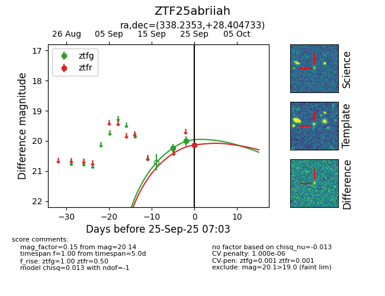
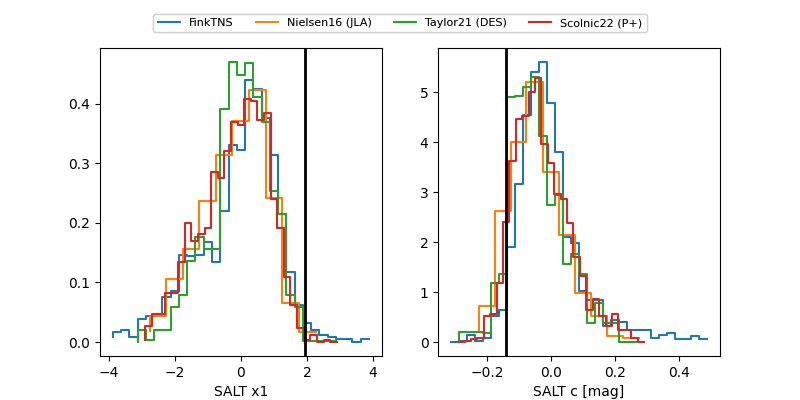

FINK: ZTF25abriiah
Lasair: ZTF25abriiah
ALeRCE: ZTF25abriiah
ZTF25abriiah (ztf,fink)
equatorial (ra, dec) = (338.2353,+28.40473)
galactic (l, b) = (89.3733,-25.29556)


last ztfg=20.01, ztfr=20.14
2 ztfg, 1 ztfr detections